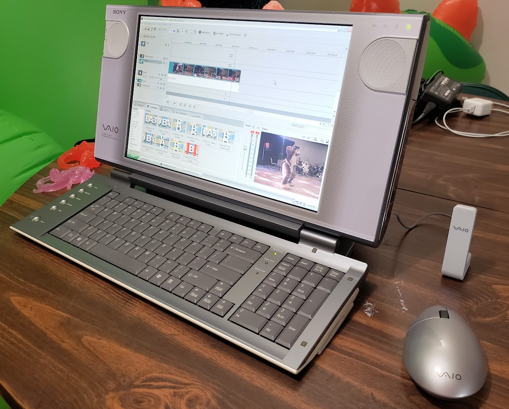

overviewthe sony vaio pcv-w30 is the coolest computer of all time. its otherworldly, all-in-one design and crazy folding keyboard make it seem like it's from another universe (which it probably is). this is my "daily driver" machine - it's not super powerful (and can't be upgraded too much due to being an all-in-one), but it's totally fine for my computing purposes. much like most other vaio computers, this was designed to be an all-in-one multimedia experience (vaio does stand for Video Audio Integrated Operation, after all). the display is super crisp, bright, and has excellent contrast that's better than even most modern LCD monitors, and the built-in speakers are surprisingly nice too! they look small and tinny, but they actually sound like a good tabletop CD boombox. you won't get boomy bass of course, but the clean and balanced sound makes listening to music very enjoyable. recently, i've upgraded this computer with 2GB of DDR-333 RAM (originally 512MB) and a 128GB SSD to replace the original, failing 80GB HDD. with these hardware upgrades and the help of the mypal browser (a fork of firefox 68 modified to run on windows xp), this computer can still browse the web decently and even (barely) load the discord browser client! |

specifications
|